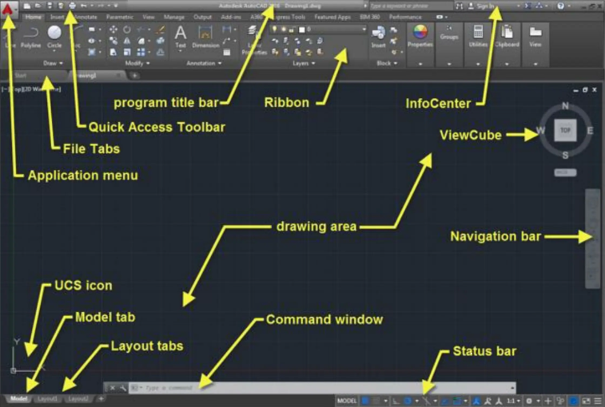

AutoCAD Civil 3D Reference
This page explains high-impact Civil 3D drafting and GIS interoperability operations in simple language.
This reference is intentionally basic-level. It focuses on drafting and CAD-GIS exchange, not advanced civil modeling.
What This Page Covers
- Interface overview.
- Must-know basics to get started.
- Must-know basic configuration (CRS first).
- High-impact command cards for beginner workflows.
- Simple drafting workflow.
- Simple GIS interoperability and georeferencing workflow.
What AutoCAD Civil 3D Is
AutoCAD Civil 3D is an AutoCAD-based platform that combines drafting tools with civil and mapping utilities. In this handbook context, it is used primarily as a drafting and CAD-GIS exchange tool, not as an advanced corridor/surface modeling platform.
Typical use cases:
- Building plan drafting.
- Section and elevation preparation.
- Road context drawing.
- CAD and GIS data exchange.
In this training context, the highest-value commands are MAPCSASSIGN, MAPIMPORT, MAPIINSERT, MAPEXPORT, and ALIGN (for simple georeference correction).
Overview of the Interface
Make sure to change the workspace to "Drafting and Annotation" for a simpler interface focused on drafting and CAD-GIS exchange. The interface elements below are the most useful for beginner drafting and map interoperability work:

- Program Title Bar: Displays the program name and current drawing title; includes minimize, maximize, and close buttons at the top of the window.
- Quick Access Toolbar: Customizable toolbar with shortcuts to frequently used commands like Save, Open, Undo, Redo, and Zoom; customize via right-click.
- File Tabs: Located at the top, allowing quick switching between open files; right-click to close tabs.
- Application Menu: Found in the top-left corner, provides commands for creating, opening, saving, and printing drawings.
- UCS Icon: Positioned at the bottom-left, shows the current User Coordinate System; click to open UCS dialog for changes.
- Model Tab: Located at the bottom of the AutoCAD window; used to work in model space where 2D and 3D objects are created and edited.
- Layout Tabs: Also at the bottom; used to manage paper space layouts for creating and printing scaled drawings.
- Ribbon: A graphical interface replacing menus and toolbars, organized into tabs with related commands accessible by clicking buttons.
- InfoCenter: Positioned at the top-right corner; provides quick access to help, tutorials, and resources.
- ViewCube: Allows rotation and zooming of the drawing view, and changing the perspective.
- Drawing Area: Central part of the AutoCAD window where drawings are created and edited.
- Navigation Bar: Located at the bottom, provides quick access to Pan, Zoom, and Orbit tools.
- Command Window: Also at the bottom, lets you enter commands by typing and pressing Enter.
- Status Bar: Displays information about the current drawing and provides quick access to settings like grid, snap, and ortho mode.
Must-Know Basics to Get Started
- Start from the project template and save to the project Drawings folder.
- Set drawing units to meters before drafting.
- Set layer strategy before linework (base, walls, openings, annotation, GIS-import).
- Turn on object snaps for precise drafting.
- Keep one master drawing and export/share copies.
Must-Know Basic Configuration
Assumption for this workshop: AOI falls in UTM Zone 43N. For any different AOI, assign the correct UTM zone before import/export.
| Setting area | Workshop default | Why it matters |
|---|---|---|
| Coordinate system | MAPCSASSIGN to UTM84-43N (for this AOI) | Prevents major location mismatch during GIS exchange |
| Units | Decimal, insertion scale in meters | Keeps drafting and GIS distances consistent |
| OSNAP (F3) | Endpoint, Midpoint, Intersection, Perpendicular | Reduces geometry errors |
| ORTHO (F8) and Polar (F10) | ON while drafting straight walls and offsets | Improves speed and line quality |
| Layer discipline | Separate layers for base, design, annotation, GIS-import | Improves readability and export control |
| XREF fade | Use XDWGFADECTL around 60 for referenced background plans | Improves tracing visibility |
Core Drafting Concepts
- Geometry should be clean and connected.
- Closed boundaries help area, hatch, and export quality.
- Layer discipline keeps files readable and reusable.
- Object snaps improve precision and reduce rework.
High-Impact Command Cards
Drafting Commands
| Command | Purpose | Practical tip | Must-know options | Common mistake |
|---|---|---|---|---|
| LINE / PLINE | Create base and wall geometry | Prefer PLINE for connected geometry | Length, Close, Width, Arc segment | Mixing disconnected LINE entities where closed boundaries are needed |
| ERASE | Remove extra geometry | Use after offset and trim operations | Object selection | Erasing before cleaning up with trim/extend |
| CIRCLE | Mark openings and reference points | Use for door/window symbols, not for walls | Center, radius/diameter | Using circles for wall geometry instead of polylines |
| OFFSET | Create wall thickness and parallel features | Offset from centerline once, then clean with TRIM | Distance value, Multiple | Offsetting wrong side repeatedly |
| TRIM | Remove extra geometry | Trim in batches after offset operations | Cutting edges selection | Trimming before selecting proper boundaries |
| EXTEND | Extend linework to boundaries | Use after TRIM to close corners | Boundary edges | Extending to the wrong edge due to zoom level |
| MOVE | Reposition objects | Use base point snapping for accuracy | Base point, displacement | Picking non-snap base points |
| COPY | Duplicate objects | Use for repetitive doors/windows | Multiple | Uncontrolled duplicate clutter |
| ROTATE | Rotate blocks/linework | Rotate around logical anchor points | Reference angle | Rotating around arbitrary point |
| SCALE | Resize geometry | Use Reference option for known scale conversion | Reference, base point | Free-scaling without known ratio |
| ALIGN | Move + rotate + optional scale in one step | Best for quick georeference with 2 point pairs | 2-point align, scale Yes/No | Using only one point and expecting full fit |
| JOIN / PEDIT | Clean polylines for closed boundaries | Convert to polyline before JOIN if needed | Join tolerance | Leaving tiny gaps that break hatch/export |
| TEXT/ MTEXT | Add annotations and dimensions | Use MTEXT for multi-line and formatting | Text style, height, width | Using TEXT for complex annotations instead of MTEXT |
| LAYER | Organize drawing readability and export control | Create layers before drafting, not after | On/Off, Freeze, Color, Lineweight | Drawing everything on layer 0 |
| MATCHPROP | Apply consistent properties quickly | Standardize by copying from a correct object | Property filters | Copying unwanted properties blindly |
| DIM | Add construction dimensions | Dimension after geometry cleanup | Style selection | Dimensioning unstable/unfixed geometry |
| PLOT | Final print output | Always run preview and check lineweights | Plot style, paper size, scale | Plotting without verifying viewport scale |
GIS Interoperability Commands
| Command | Purpose | Practical tip | Must-know options | Common mistake |
|---|---|---|---|---|
| MAPCSASSIGN | Assign drawing coordinate system | Do this first in every project | Set CRS to UTM84-43N for this AOI, or correct UTM zone for another AOI | Importing GIS data before CRS assignment |
| MAPIMPORT | Bring GIS vectors into CAD | Import only required layers initially | Source format, layer mapping, attribute mapping | Importing all layers and creating heavy clutter |
| MAPIINSERT | Insert georeferenced raster | Check placement right after insertion | Image source, insertion alignment | Ignoring raster CRS mismatch |
| MAPEXPORT | Export CAD to GIS-ready format | Export clean layers only | Output format, object selection, attributes | Exporting mixed construction layers |
Step-by-Step Practical Workflow
flowchart TD
A[Set project template and units] --> B[Assign CRS with MAPCSASSIGN UTM84-43N]
B --> C[Draft base footprint with PLINE]
C --> D[Offset walls]
D --> E[Trim and Extend cleanup]
E --> F[Add openings and dimensions]
F --> G[Layer and property cleanup]
G --> H[Plot to PDF]
classDef input fill:#e3f2fd,stroke:#1565c0,stroke-width:1.5px,color:#0d47a1;
classDef process fill:#fff8e1,stroke:#ef6c00,stroke-width:1.5px,color:#e65100;
classDef decision fill:#ffebee,stroke:#c62828,stroke-width:1.5px,color:#8e0000;
classDef output fill:#e8f5e9,stroke:#2e7d32,stroke-width:1.5px,color:#1b5e20;
class A input;
class B,C,D,E,F,G process;
class H output;Use the simple sample: two-room ground-floor building with approach road context.
Part A: Build the Plan
- Draw the outer footprint using polyline.
- Draw room partition lines.
- Make required boundaries closed.
- Add circles or symbols only where needed.
Part B: Convert to Practical Wall Plan
- Use offset for wall thickness.
- Use trim and extend to clean intersections.
- Use erase to remove extra segments.
- Use join or pedit where continuity is required.
Part C: Add Openings and Presentation
- Mark door and window positions.
- Cut openings with trim and extend.
- Add dimensions.
- Add annotations.
- Keep linework readable at print scale.
Part D: Prepare Output
- Create one layout.
- Set viewport and scale.
- Verify lineweights and text size.
- Export to PDF.
CAD and GIS Interoperability
flowchart TD
A[Assign CRS UTM84-43N] --> B[MAPIMPORT vector data]
B --> C[MAPIINSERT georeferenced raster]
C --> D{Local drawing not georeferenced?}
D -->|Yes| E[MOVE by control point]
E --> F[SCALE by known reference distance]
F --> G[Optional ALIGN with 2 point pairs]
G --> H[Verify against known UTM points]
D -->|No| H
H --> I[MAPEXPORT cleaned output]
classDef input fill:#e3f2fd,stroke:#1565c0,stroke-width:1.5px,color:#0d47a1;
classDef process fill:#fff8e1,stroke:#ef6c00,stroke-width:1.5px,color:#e65100;
classDef decision fill:#ffebee,stroke:#c62828,stroke-width:1.5px,color:#8e0000;
classDef output fill:#e8f5e9,stroke:#2e7d32,stroke-width:1.5px,color:#1b5e20;
class A input;
class B,C,E,F,G,H process;
class D decision;
class I output;Import GIS vectors
- Use mapimport.
- Select input format, such as shapefile.
- Map layer and attribute settings.
- Check geometry location after import.
Insert georeferenced raster
- Use mapiinsert.
- Select georeferenced basemap GeoTIFF.
- Confirm scale and placement.
Georeference Local CAD to UTM84-43N
Use this workflow when local CAD linework does not match GIS location:
flowchart TD
A[Assign MAPCSASSIGN CRS first] --> B[Pick 2 known local control points]
B --> C[Identify matching UTM target points]
C --> D[MOVE near first UTM point]
D --> E[SCALE by reference distance]
E --> F[ALIGN with 2 point pairs if rotation remains]
F --> G[Verify with independent checkpoint]
G --> H[Proceed to MAPEXPORT]
classDef input fill:#e3f2fd,stroke:#1565c0,stroke-width:1.5px,color:#0d47a1;
classDef process fill:#fff8e1,stroke:#ef6c00,stroke-width:1.5px,color:#e65100;
classDef decision fill:#ffebee,stroke:#c62828,stroke-width:1.5px,color:#8e0000;
classDef output fill:#e8f5e9,stroke:#2e7d32,stroke-width:1.5px,color:#1b5e20;
class A input;
class B,C,D,E,F,G process;
class H output;- Assign drawing CRS first using MAPCSASSIGN and set UTM84-43N.
- Identify at least two known control points in local CAD and corresponding UTM positions.
- Use MOVE to place local drawing near the first UTM control point.
- Use SCALE with Reference option using known local distance versus UTM distance.
- If rotation mismatch exists, use ALIGN with two source-target point pairs and allow scaling.
- Verify final position using at least one independent checkpoint.
Output: local CAD geometry aligned to UTM84-43N for reliable GIS exchange.
Export GIS-ready output
- Use mapexport.
- Select required format.
- Keep useful attributes.
- Validate export in QGIS.
Must-Know Tool Paths
- Coordinate system assignment: MAPCSASSIGN
- Import vector GIS data: MAPIMPORT
- Insert georeferenced raster: MAPIINSERT
- Export GIS data: MAPEXPORT
- Georef alignment helper: ALIGN
- Drafting cleanup: TRIM, EXTEND, JOIN, PEDIT
- Output: PLOT
Critical QA Checks
- CRS is assigned first and confirmed (UTM84-43N for this AOI, or correct UTM zone for another AOI).
- Drawing units are meters.
- Export boundaries are closed polylines.
- Construction/helper layers are excluded from GIS export.
- Exported output is validated in QGIS before sharing.